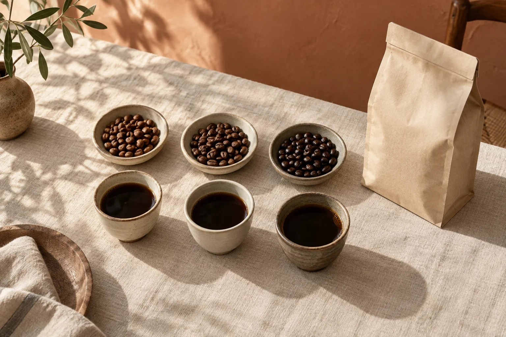

01 / A SMALL QUESTION
豆の棚で、
迷っていませんか。
パッケージは素敵。でも、産地の名前や焙煎の言葉だけでは、自分の好みに合うか分からない。結局、いつもと同じものを手に取ってしまう。
そんなときは、「どこの豆か」を決める前に、どんな一杯を飲みたいかを言葉にしてみませんか。
軽やかに飲みたい朝。
ミルクを添えて、ひと息つきたい午後。
選ぶヒントは、日々の中に。
02 / FIND YOUR PREFERENCE
「好き」を探すための、
小さなメモ。
味の感じ方は、豆だけでなく淹れ方や飲む場面によっても変わります。ここでは好みを整理するために、今の気分に近い言葉を選んでみてください。
軽やかな味が好き。
商品説明の香りや酸味の表現を確認してみましょう。気になる言葉をメモして、飲んだときの印象と比べる手がかりに。
好みを整理する操作例です。診断・味の保証・個別商品の推奨ではありません。

03 / BEFORE YOU CHOOSE
選ぶ前に確かめたい、
三つのこと。
定期便でも、その都度の購入でも。届いてから困らないように、自分の飲み方に合っているかを確かめましょう。
- 01
豆のまま？ 粉で届く？
ミルを持っているか、いつもの器具に合う挽き方を選べるか。まずは手元の道具から。
- 02
飲む量と、届く間隔。
ひとりで飲むのか、家族と飲むのか。量・配送間隔・送料を合わせて確認します。
- 03
休むときのルール。
スキップや解約の締切、最低継続回数、変更方法。価格だけでなく、続け方も大切です。
商品ページの確認メモ。
| 確認すること | 知りたい内容 |
|---|---|
| 味の説明 | 香り・苦味・酸味の表現 |
| 届くもの | 内容量・豆 / 粉・焙煎情報 |
| 支払う金額 | 税込価格・送料・各回の総額 |
| 続け方 | 配送間隔・変更・解約条件 |
04 / THE NEXT CUP
次の一杯を、
自分の言葉で選ぶ。
架空のコーヒー便「朝の余白」。
選んだ好みを引き継いで、商品情報の確認画面へ進みます。
yohaku.COFFEE SELECTION
朝の余白 コーヒー便
飲み方に合わせて商品情報を確かめる、定期便の提案用コンセプトです。
価格・内容量・産地・配送条件は未設定。実際の購入・申込みはできません。
QUESTIONS
気になること。
この商品は購入できますか？
購入できません。広告→記事→商品情報の流れを示す架空の提案用デモです。
好みを選ぶと、何が変わりますか？
記事内の確認ポイントが切り替わり、商品情報プレビューに選択した言葉が表示されます。個人情報は取得せず、外部にも送りません。
価格や配送条件はどこで確認しますか？
本制作では、支給された正式な条件を商品ページに掲載します。このデモでは未設定であることを明記しています。
一杯を選ぶことが、
朝を楽しむきっかけに。